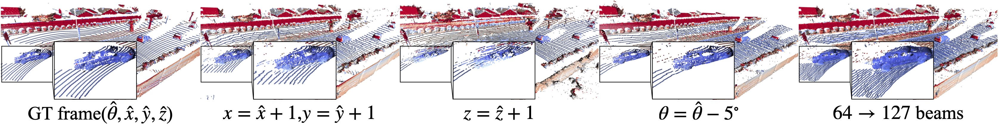

Dynamic LiDAR Re-simulation using Compositional Neural Fields
1ETH Zurich
2TU Munich
3Technion
4NVIDIA
CVPR 2024
Abstract
Overview
{kind=link}
LiDAR novel view synthesis (NVS) by editing the scene
DyNFL enables to synthesize LiDAR novel views by editing the scene, such as vehicle removal, trajectory manipulation, and vehicle insertion. For each example, Original scene(Left) and scene after edition(Right) are demonstrated.
Vehicle removal


Trajectory manipulation

Vehicle insertion

LiDAR NVS with varying sensor configuration

{kind=link}
LiDAR novel view synthesis by changing sensor elevation angle θ, poses (x, y, z) and number of beams on Waymo Dynamic dataset. The points are color-coded by the intensity values (0 0.25).
Qualitative results for LiDAR range estimation
{kind=link}
{kind=link}
Citation
@inproceedings{Wu2023dynfl,
title={Dynamic LiDAR Re-simulation using Compositional Neural Fields},
author={Wu, Hanfeng and Zuo, Xingxing and Leutenegger, Stefan and Litany, Or and Schindler, Konrad and Huang, Shengyu},
booktitle = {The IEEE Conference on Computer Vision and Pattern Recognition (CVPR)},
year = {2024}
}